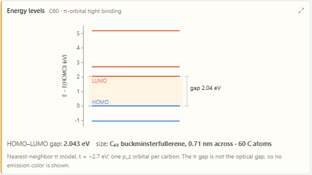
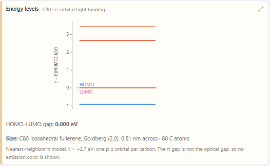
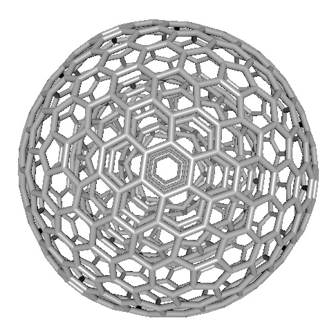
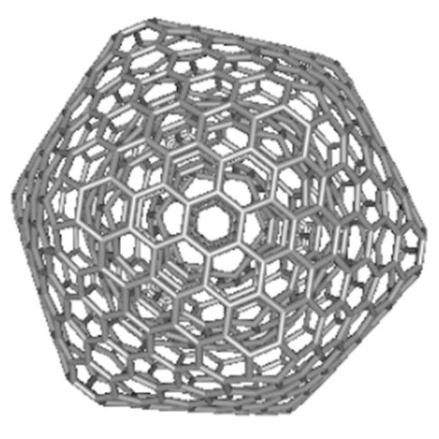

The Fullerene Family
Buckminsterfullerene is one of a family of closed carbon cages with the symmetry of an icosahedron. Ask an AI agent in AIMS to build the family, compare the energy gaps of its members, and nest three of them into a carbon onion.
In 1985 Kroto, Heath, O’Brien, Curl and Smalley found that carbon vaporized by a laser forms a molecule of sixty atoms, and proposed that it is a closed cage shaped like a soccer ball, with twelve pentagons and twenty hexagons. They named it buckminsterfullerene, C60, after the architect of the geodesic dome, and Curl, Kroto and Smalley shared the 1996 Nobel Prize in Chemistry for the discovery. In 1990 Krätschmer, Lamb, Fostiropoulos and Huffman made C60 in macroscopic amounts from graphite evaporated in helium, and solid C60 could then be studied in the laboratory. C60 is one member of a family. Every carbon atom of a fullerene is bonded to three others, and every ring is a pentagon or a hexagon. Euler’s formula for polyhedra then requires exactly twelve pentagons in every such cage, however many hexagons it has. A flat sheet of hexagons, which is graphene, has no curvature at all, and the twelve pentagons are what close it into a cage.
In 1992 Ugarte found that carbon soot irradiated in an electron microscope forms nearly spherical nanoparticles made of concentric graphitic shells, spaced about as far apart as the layers in graphite. These carbon onions became a second family of closed carbon structures. Banhart and Ajayan later found that continued irradiation compresses the core of an onion enough to turn it into diamond.
The fullerenes with the rotational symmetry of C60, the icosahedral fullerenes, place their twelve pentagons at the twelve corners of an icosahedron. A hexagonal lattice folded onto the twenty triangular faces of an icosahedron produces them, and the way it is folded is described by two whole numbers h and k. This is the Goldberg–Coxeter construction. A cage built this way has 20(h2 + hk + k2) atoms, so the icosahedral family runs C20, C60, C80, C140, C180, C240, C260 and on, with C540 at h = k = 3. Most fullerenes have lower symmetry. C70, which appeared beside C60 in the same experiments, is elongated like a rugby ball, and the icosahedral cages are a small and highly symmetric subset of all fullerenes.
Fullerenes are not equally stable. Where two pentagons share an edge, the cage is strained, and Kroto argued in 1987 that the stable fullerenes are those in which every pentagon is surrounded by hexagons. This is the isolated-pentagon rule. C60 is the smallest fullerene that obeys it, which is one reason it is the most abundant cage in carbon vapor. In C20 every pentagon shares all five of its edges with other pentagons. Prinzbach and coworkers made it in 2000 in the gas phase, starting from dodecahedrane, C20H20, which has the same cage with a hydrogen atom on every carbon atom.
In AIMS a student names a fullerene by its number of atoms, and the AI agent builds it by this construction, computes its energy levels, and posts its energy levels in the chat. The example below has five turns: build C60, C240 and C540 and compare their gaps, build C80, make the C120 dimer, nest three cages into a carbon onion, and relax the onion with an energy minimizer.
The Fullerene Family. Scroll through the chat on the left to follow the five turns. The first four turns post an energy-level chart for each structure they build. The structure in the lab is the relaxed carbon onion, held at room temperature by a thermostat.
Energy Levels of a Cage
The energy gap of a fullerene comes from the electrons in the pz orbitals, one per carbon atom, pointing outward from the cage. The agent finds their energy levels in the π tight-binding model, in which an electron hops between the pz orbitals of nearest-neighbor carbon atoms with an energy of 2.7 eV. This is the model the article on carbon nanotubes uses to explain why some nanotubes are metallic. A cage of N atoms has N levels, and its N π electrons fill the lowest N/2 levels, two to a level. The highest filled level is called the HOMO (highest occupied molecular orbital) and the lowest empty level the LUMO (lowest unoccupied molecular orbital). The energy between them is the HOMO–LUMO gap.
In the first turn the agent builds C60, C240 and C540 and computes the levels of each. They are 0.71, 1.41 and 2.11 nm across, and their gaps are 2.043, 1.340 and 0.966 eV. The gap shrinks as the cage grows. An electron spread over a larger cage has more closely spaced levels, as an electron in a larger quantum dot does, and the limit of a very large cage is a flat sheet of graphene, whose gap is zero.
| Fullerene | Goldberg (h, k) | Diameter | HOMO–LUMO gap | Shell |
|---|---|---|---|---|
| C60 | (1, 1) | 0.71 nm | 2.043 eV | Closed |
| C80 | (2, 0) | 0.81 nm | 0 eV | |
| C240 | (2, 2) | 1.41 nm | 1.340 eV | Closed |
| C540 | (3, 3) | 2.11 nm | 0.966 eV | Closed |
The second turn builds C80, the icosahedral cage with h = 2 and k = 0, 0.81 nm across, and its gap is zero. The chat explains why. The HOMO of C80 is four-fold degenerate, meaning that four levels share the same energy. Together they hold eight electrons, and C80 has only two left to put there. A partly filled level of this kind is called an open shell, and the HOMO and LUMO are then the same level. This is the cage that Stevenson and coworkers found in 1999 holding a cluster of three scandium atoms and one nitrogen atom, Sc3N@C80. The cluster gives the cage six electrons, which fill the four-fold level.


In this model the shell of an icosahedral cage is closed when h − k is a multiple of three, as it is for C60, C180, C240 and C540, and open otherwise, as it is for C20, C80, C140, C260 and C320. The closed-shell cages are the leapfrog fullerenes, for which Fowler and Steer gave an electron-counting rule in 1987. The rule has the same three-fold pattern as the rule for nanotubes, in which a nanotube is metallic when n − m is a multiple of three, although a multiple of three leaves a nanotube with no gap and a fullerene with a gap.
Two Cages Joined
The third turn makes C120. The name usually refers to two C60 cages joined by two bonds that form a four-membered ring between them, a molecule Wang, Komatsu and coworkers made in 1997 by grinding C60 with potassium cyanide. The same ring links the cages of C60 polymerized under pressure, as Iwasa and coworkers showed in 1994, and is one of the proposed links between the fullerene and the nanotube of a carbon nanobud. The agent builds the dimer, 120 atoms with the centers of the two cages 0.85 nm apart, and finds a gap of 1.632 eV, 0.411 eV below that of C60. Each of the four carbon atoms of the ring has four bonds, so its pz orbital goes into those bonds and it contributes no π orbital. In the model the ring therefore joins no π orbital of one cage to any of the other, and each cage is a C60 that has lost two pz orbitals. The levels of the dimer are the levels of one such cage, each appearing twice, and the gap of 1.632 eV is the gap of that 58-orbital cage.
The Carbon Onion
C60, C240 and C540 are the first three icosahedral cages with h = k. In the fourth turn the agent nests them into the onion C60@C240@C540, where @ means “inside”. The onion has 840 atoms and is 2.11 nm across. The builder places all three shells on the same icosahedron, so they share their symmetry axes, and the shells are about 0.35 nm apart. Nothing bonds one shell to the next. In the lab the atoms of each shell are bonded by the Tersoff carbon force field, and the shells are held together by the van der Waals attraction AIMS uses between the layers of graphite.
The question of this turn is which shell sets the gap of the onion. The π model lets an electron hop only between bonded atoms, so no electron hops from one shell to another, and the levels of the onion are the levels of its three shells side by side. The agent finds the onion’s gap to be 0.966 eV, the gap of C540, with both the HOMO and the LUMO of the onion on the outer shell. The gaps nest. The HOMO of C540 lies above the HOMOs of the two inner shells, and its LUMO lies below their LUMOs, so the outer shell supplies both edges of the gap.
Round on the Card, Faceted in the Lab
The gallery card of the onion is round, and the onion in the lab is not. The builder places the atoms of a shell nearly on a sphere and makes every bond 1.42 Å long. The lab moves the atoms to a minimum of the energy of its force field when a structure is loaded. In the fifth turn the agent runs the same minimization on the onion and adds the result to the gallery as a second card, so the chat shows the onion as built and as relaxed. The energy falls from −6.807 to −7.260 eV per atom, and no atom moves more than 1.08 Å. A student can relax any finite structure in the gallery without the agent: the Minimize Energy item in the menu of its card replaces the card with the relaxed structure, and Undo restores the card as built.
The larger shells facet. The distance of the C540 atoms from the center varies by 0.18 Å in the built onion and by 1.32 Å in the relaxed one. Its twelve pentagons become the corners of an icosahedron: the 60 pentagon atoms lie 11.75 Å from the center on average, and the other 480 atoms 10.68 Å. The agent also relaxes C540 by itself and finds a spread of 1.33 Å, so the inner shells have almost no effect on the shape of the outer one. Among sheets of three-bonded carbon, the Tersoff force field gives the lowest energy to a flat one, as in graphite. A pentagon in a hexagonal sheet bends the sheet into a cone, as a paper disk becomes a cone when a 60° wedge is cut from it and the cut edges are joined. In a large cage the hexagons between the pentagons relax into nearly flat faces, and the bending is concentrated at the twelve pentagons. C240 facets less, with a spread of 0.61 Å. In C60 every atom belongs to a pentagon and all sixty atoms are equivalent by symmetry, so they move alike and the cage stays round. The relaxation moves atoms without changing which atoms are bonded, and the π model depends only on the bonds, so the relaxed onion has the same gap as the onion as built, 0.966 eV.


Running Experiments by Asking
The student names a fullerene by its number of atoms and asks a question about it. The agent decides which tools to run. AIMS folds the hexagonal lattice onto the icosahedron, joins the two cages through a four-membered ring, nests the shells, computes the π levels, and measures the relaxed shape, and the agent posts the chart and explains the result in the chat.
Open The Fullerene Family from the Examples menu (Nanotechnology, Fullerenes). Read the five turns, then ask your own questions in the chat. The calculations run in your browser. Building a cage and computing its levels takes a few seconds, and relaxing the 840-atom onion takes a few more.
The five turns of the example
- Three cages — "Build C60, C240 and C540, the nested shells of a carbon onion, and compare their energy gaps."
- An open shell — "Now build the icosahedral C80 and compute its levels. Where does it fit in that trend?"
- The dimer — "Now make C120 and compare its levels with C60's."
- The onion — "Now nest the three shells into the carbon onion C60@C240@C540. Which shell sets the onion's gap?"
- The relaxed onion — "The onion looks round on its card but faceted in the lab. Relax it with the energy minimizer and explain the difference."
Go further
- The three-fold rule — "Build C180 and C320 and check which have a closed shell." C180 has h = 3 and k = 0, and C320 has h = 4 and k = 0.
- The smallest fullerene — "Build C20, the smallest fullerene." C20 has twelve pentagons and no hexagons.
- A fourth shell — "Add a fourth shell, C960." The onion C60@C240@C540@C960 has 1,800 atoms and runs slowly in the lab.
- Relax a single cage — "Relax C540 and compare it with C60." The agent adds the relaxed cage as a new card and leaves the card of the first turn as built.
- The onion at room temperature — press Play in the lab. A thermostat holds the onion at 27 °C, and the shells vibrate about their relaxed positions.
The Model and Its Limits
AIMS builds each cage by geometry alone, from h, k and the carbon–carbon bond length. The electronic structure comes from the nearest-neighbor π tight-binding model with a hopping energy of 2.7 eV, solved for every pz orbital of the structure at once. The lab moves the atoms with the Tersoff carbon force field and, for the onion, the interlayer attraction of graphite. The force field governs the motion of the atoms, and the tight-binding model governs the electrons.
The π model gives every bond the same hopping energy, although the bonds of C60 come in two lengths, and it treats the bonds of a curved cage as it treats the bonds of a flat sheet. In a real cage the curvature mixes the in-plane σ orbitals into the π levels, and the mixing is strongest in the smallest cages, so the gaps in the table are qualitative. The HOMO–LUMO gap is also different from the energy of the light a fullerene absorbs, because an excited electron and the vacancy it leaves attract each other, and because some transitions between levels are forbidden by symmetry. The lowest transition of C60 is one of these, and the agent reports no color for any fullerene. The model has no hopping between the shells of the onion, and the shells of a real onion interact weakly. The faceted shape of the relaxed onion is the shape the Tersoff force field gives a perfect cage with exactly twelve pentagons, while the onions in Ugarte’s micrographs are nearly spherical.
What the Solver Produced
The model was given the positions of the carbon atoms and one hopping energy, and the force field was given the same positions. Everything below came out of the calculations:
- The trend — the gaps of C60, C240 and C540 are 2.043, 1.340 and 0.966 eV.
- The open shell — C80 has a four-fold degenerate HOMO holding two of its eight electrons.
- The dimer — C120 has a gap of 1.632 eV with every level appearing twice.
- The onion — the gap of C60@C240@C540 is 0.966 eV, and both its HOMO and its LUMO lie on the outer shell.
- The facets — relaxed, the outer shell departs from a sphere by 1.32 Å, with its pentagons at the corners, and by 1.33 Å when relaxed alone.
Conclusion
This article uses the fullerene family to illustrate a new way to learn science: students converse with an AI agent that turns a plain-language question into a quantum mechanical calculation and hands back the result as a chart. The idea that C60 is one of many closed carbon cages, normally a picture in a chemistry textbook, becomes something students build and measure for themselves. They watch the energy gap shrink from C60 to C540, find that C80 has an open shell, and see that two joined cages behave in the π model as two separate cages of 58 orbitals. They nest three cages into a carbon onion and find that its outer shell sets its gap, and they relax the onion and find that its large shells facet at their pentagons. By pairing a physically grounded solver and force field with an AI that can build the structures and run them, AIMS lets students investigate a family of molecules they would otherwise only read about.
← Back to AIMS